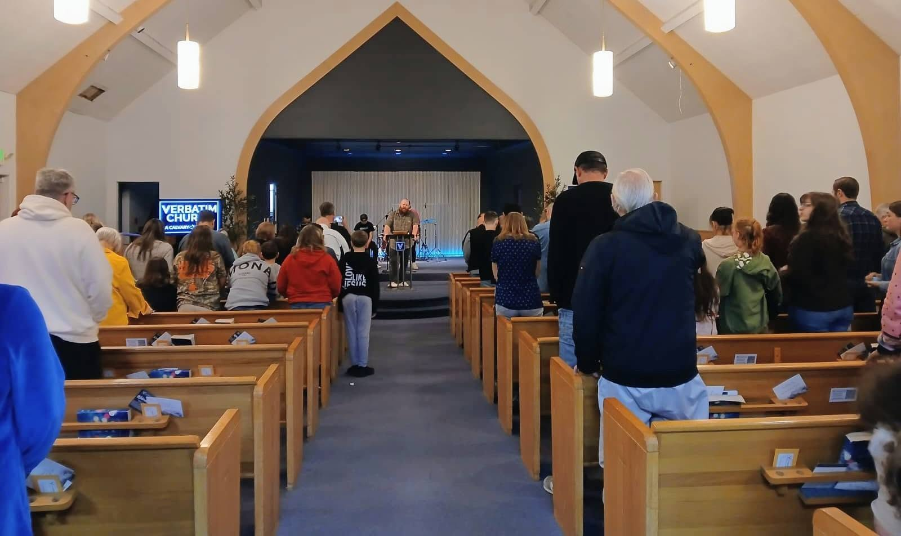

Our leadership
SERVANTS
FIRST.
Our leaders teach Scripture faithfully, care for people, and equip the church to follow Jesus.
Lead pastor
TANNER
FERGUSON
Tanner serves Verbatim Church through verse-by-verse Bible teaching, pastoral care, leadership development, and a heart to see families find hope and healing in Jesus.
His desire is to help people know Jesus, grow deeper in God’s Word, and live out their faith with confidence and grace.
WE WOULD LOVE
TO MEET YOU.
Join us this Sunday and connect with our church family.
Plan your visit ↗